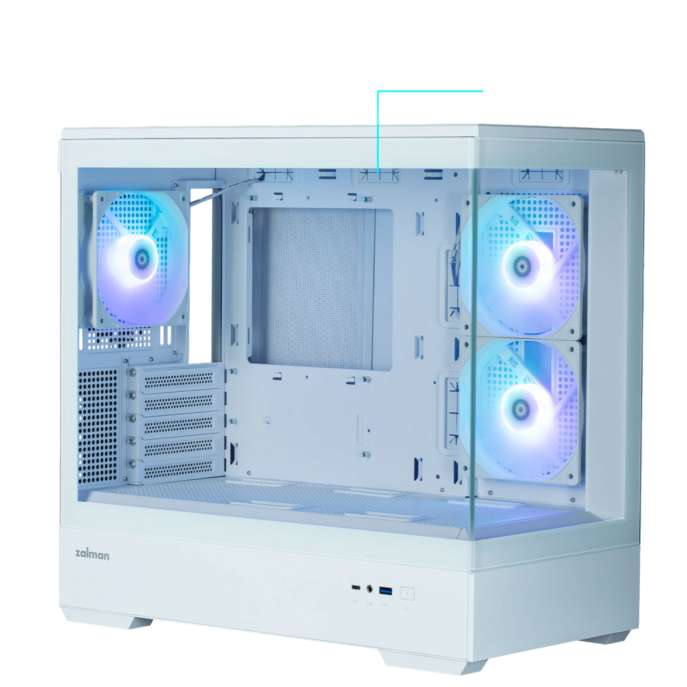

Корпус
Корпус компьютера выполняет несколько ключевых функций:
1. Поддержка компонентов: Он удерживает все детали компьютера в нужном положении, обеспечивая их стабильность и надёжность
2. Продуваемость: Корпус способствует циркуляции воздуха, что помогает поддерживать оптимальную температуру комплектующих внутри ПК
3. Защита от пыли: Он защищает внутренние компоненты от пыли и других загрязнений, продлевая их срок службы
4. Эстетика: Корпус придаёт компьютеру эстетичный внешний вид.
Как правильно подобрать корпус:
1. Определите тип и размер корпуса
• Mini-Tower: Компактный, подходит для офисных или простых домашних ПК
• Midi-Tower: Стандартный размер, подходит для большинства сборок, включая игровые системы
• Full-Tower: Для мощных и дорогих систем, а также для размещения большого количества дополнительного оборудования
2. Совместимость с материнской платой:
• mATX: Подходит для Mini-Tower
• ATX: Подходит для большинства Midi-Tower
• E-ATX: Можно установить в некоторые Midi-Tower и Full-Tower
3. Размещение блока питания:
• Убедитесь, что блок питания подходит по длине и не перекрывает другие компоненты
• Предпочтительно нижнее размещение для игровых систем
4. Охлаждение:
• Проверьте количество мест для установки вентиляторов
• Убедитесь в наличии пылевых фильтров и их легкости в снятии.
5. Передняя стенка корпуса:
• Сетчатая панель (mesh) лучше для продуваемости, подходит для геймерских систем
6. Боковое окно:
• Закаленное стекло предпочтительнее для прочности и устойчивости к царапинам.
7. Дополнительные функции:
• Вентиляторы в комплекте
• Корзины под жесткие диски, желательно съемные
• Порты на передней панели (USB 3.0 и выше)
